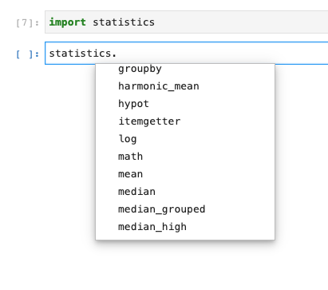

Einführung
Inhalt
Einführung¶
Warum Module?¶
In diesem Kapitel werden wir uns mit einigen externen Modulen beschäftigen. Was sind externe Module? Wir können Python um bestimmte “Fähigkeiten” erweitern, in dem wir Code intergrieren, der von anderen geschrieben wurde und den wir nutzen können. Für alles was wir bisher im Python umgesetzt haben, wurden nur die Basiskonfiguration von Python (“pure Python”) genutzt. So haben wir z.B. sog. build-in-Funktionen kennengelernt. Diese konnten wir nutzen, in dem wir diese aufgerufen haben. Wir mussten jedoch zuvor nicht dafür sorgen, dass diese auch verfügbar sind. Die “Fähigkeiten” waren quasi einfach da.
Dieses Vorgehen war wichtig, um die Grundlagen der Programmierung und im Speziellen von Python kennenzulernen. Grundsätzlich könnten wir nun auch mit ernsthafter Datenanalyse anfangen. Jedoch müssten wir jegliche Funktionalität (z.B. Dateien einlesen, Berechnungen durchführen, Graphen plotten etc.) selber von Grund auf programmieren. Dies ist aber natürlich nicht notwendig, da Python sich eine großen Community erfreut und viele der benötigten Funktionalitäten bereits von anderen programmiert wurden. Um diese Funktionalitäten nutzen zu können (Hinweis: Python ist Open Source, d.h. der Source Code ist grundsätzlich frei zugänglich) müssen wir spezifische Module importieren.
Als Beispiel lassen Sie uns vorstellen, dass wir ein wichtiges Projekt haben und im Rahmen dieses Projekts das arithmetische Mittel von 10 wichtigen Zahlen berechnen müssen.
Sie haben mittlerweile die Grundlagen erlernt, um diese wichtige Aufgabe in Python umzusetzen. Zur Erinnnerung, die Berechnung des arithmetischen Mittels lautet:
Eine Implementierung in “pure” Python könnte z.B. wie folgt aussehen:
# Berechnung des arithmethischen Mittels
def calc_xbar(xs):
n = len(xs)
xbar = sum(xs)/n
return xbar
# Anwendungsbeispiel
zahlen = [1,2,3,4,5,6,7,8,9,10]
calc_xbar(zahlen)
5.5
Die Umsetzung in Python war nicht besonders komplex. Dennoch erscheint es mühsam, dass wir für ein solches Problem das Rad quasi neu erfinden müssen. Genau hier kommen externe Module ins Spiel: wir machen uns stattdessen die Implementierung von anderen zunutze. Gründsätzlich können wir davon ausgehen, dass für die meisten Fragestellungen andere bereits Lösungsansätze programmiert haben. Im Falle von Python gilt dies inbesondere auch für das Thema Datenanalyse.
Für die o.g. Fragestellung würden wir stattdessen z.B. ein Modul namens statistics importieren, in welchem die Funktion mean (engl. für arithmetisches Mittel) bereits implementiert ist.
Wir gehen dann wie folgt vor:
from statistics import mean
zahlen = [1,2,3,4,5,6,7,8,9,10]
mean(zahlen)
5.5
Der Vorteil ist, dass wir uns keine Gedanken über die Implementierung der Funktion calc_xbar machen müssen und stattdessen die bereits existierende Funktion mean nutzen können, von der wir - zumindest bei populären Modulen - hinreichend zuversichtlich sein können, dass diese korrekt ist.
Nutzen von externen Modulen1¶
Um zusätzliche “Fähigkeiten” verfügbar zu machen, müssen wir diese importieren. Dies setzt jedoch voraus, dass die Module bzw. Packages2 grds. auch verfügbar sind. Viele Module sind standardmäßig nicht verfügbar und müssen zuvor installiert werden. Um externe Module zu nutzen sind also immer zwei Schritte nötig:
Installieren von Module
Importieren von Module
Installieren von Modulen¶
Sofern Sie Python via Anaconda installiert haben oder google colab nutzen, sind die meisten von uns benötigten Module bereits vorinstalliert. Einige Module jedoch nicht. Z.B. ein Modul, welches speziell für diesen Kurs geschrieben wurde und ihnen einige hilfreiche Funktionen insb. zum Herunterladen und Visualisieren von Daten bietet: BusinessAnalytics.
Der einfachste Weg ein Modul zu installieren ist, indem Sie folgenden Code in einer Zeile ausführen:
# Installiert ein Modul in ihrer gewählten Python-Umgebung
import sys
!{sys.executable} -m pip install <modul name>
Sobald Sie den o.g. Code ausführen, wird die Installation beginnen. Dies dauert meist nur wenige Sekunden. Sollte das Modul bereits vorhanden sein, wird ihnen dies mitgeteilt. Das spezielle Modul für diesen Kurs installieren Sie also, in dem Sie folgendes ausführen:
# Installiert das Module "BusinessAnalytics" in ihrer gewählten Python-Umgebung
import sys
!{sys.executable} -m pip install BusinessAnalytics
Importieren von externen Modulen¶
Sofern ein Modul auf dem Rechner installiert ist, können Sie dieses nutzen, in dem sie es importieren.
Sie können ein Modul auf verschiedene Weisen importieren:
Importieren des Moduls:¶
Wir importieren ein Modul, in dem wir folgenden Code ausführen:
import <modul name>
Schauen wir uns die dies anhand eines konkreten Beispiels - des o.g. Modules statistics - genauer an.
import statistics
Wir können jetzt alle “Fähigkeiten” des Moduls statistics nutzen, in dem wir diese mit der sog. “Punkt-Notation” aufrufen. Wir haben diese bereits kennengelernt, als wir uns z.B. alle Methoden des Datentypes list haben anzeigen lassen wollen:

statistics.variance(zahlen)
9.166666666666666
Da es oft mühsam ist, das Wort “statistics” vor jede genutzte Funktion zu schreiben, ist es üblich, dass man einige Module importiert und dem importierten Modul dann eine andere, kürzere Bezeichnung gibt. Dies sähe dann wie folgt aus:
import <modul name> as <kurzbezeichnung>
In Falle des Moduls statistics könnten wir z.B. schreiben
import statistics as st
Wir müssen dann nur noch st schreiben, wenn wir die Funktionen des Moduls statistics nutzen wollen.
st.variance(zahlen)
9.166666666666666
Prinzipiell können wir die Kurzbezeichnung frei wählen. Jedoch gibt es hierbei zwei Dinge zu beachten:
Für einige bekannte Module hat sich eine einheitliche Kurzschreibweise etabliert (z.B. für die von uns noch zu importierenden Module
pandasundnumpy)Die Kurzbezeichnung sollte nicht mit anderen Variablennamen oder
build-inKeywords oder Funktionen kollidieren, d.h. einzigartig sein
Selektiver Import¶
Die o.g. Variante hat den Vorteil, dass wir alle Funktionen des Moduls nutzen können. Jedoch benötigen wir oft nur einige selektive Funktionen der importierten Module. Für diesen Zweck hat sich eine andere Art des Imports etabliert:
from <modul name> import <function1>, <function2>
Wenn wir z.B. bereits wissen, dass wir nur zwei Funktionen aus dem Modul statistics nutzen werden - die Funktion mean und die Funktion variance, dann können wir folgenden Code ausführen:
from statistics import mean, variance
Wir können dann die Funktionen direkt ausführen:
m = mean(zahlen)
v = variance(zahlen)
Konventionen¶
Module werden zu Beginn des Programms importiert. In einem Jupyter Notebook sollten wir uns deshalb angewöhnen, die benötigten Module als erste Code-Zellen zu importieren. Wenn wir im Laufe unseres Problemlösungsprozesses zusätzliche Module importieren wollen, sollten wir diese zu Beginn des Notebooks hinzufügen.
Dieses Vorgehen stellt zum einen sicher, dass unser Programm sequenziell, d.h. von oben nach unten, funktioniert und zum anderen können wir auch sehr übersichtlich erkennen, auf welche externen Module und Funktionen unser Programm zugreift. In unserem obigen Beispiel würden wir z.B. direkt erkennen, dass wir nur zwei Funktionen aus dem Modul statistics benötigen.
In den nächsten beiden Kapiteln werden wir zwei für die Datenanalyse essentielle Module vorstellen:
Dabei handelt es sich um zwei der bekanntesten und weitverbreitetsten Module in Python. Beide Module sind frei verfüg- und einsehbar und von Millionen von Nutzern täglich geprüft. Wir können also mit zwei kurzen Import-Zeilen, den Funktionsumfang von Python signifikant und für die Zwecke der Datenanalyse sehr zielgerichtet erweitern und uns gleichzeitig sicher sein, dass die von uns sodann genutzten Funktionen auch tatsächlich korrekt implementiert sind.